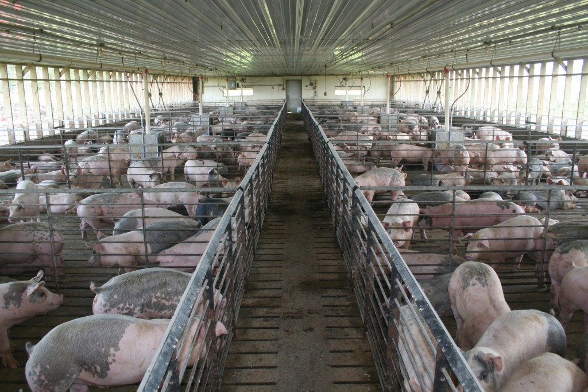

Setting up a piggery requires both financial investment and careful management, but with proper planning, it can become a profitable venture. Focus on animal welfare, healthy pigs, and proper sanitation to ensure the long-term success of your piggery.
